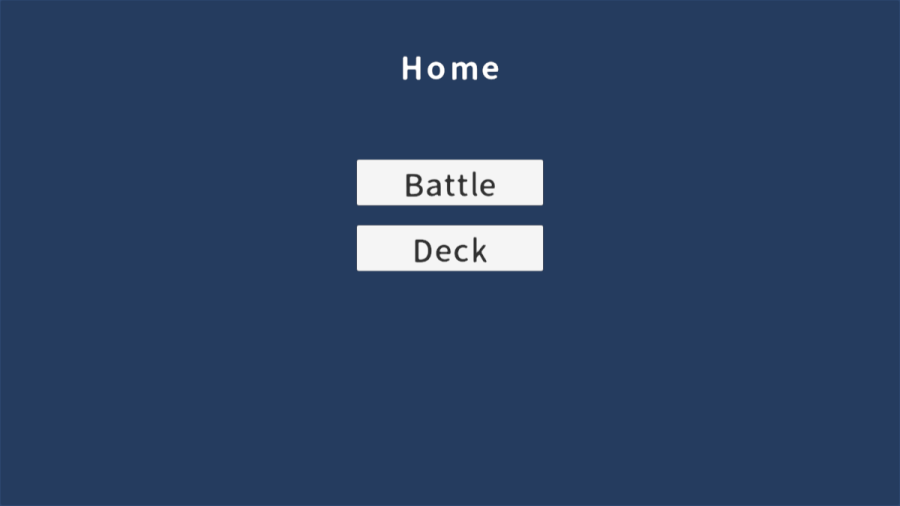
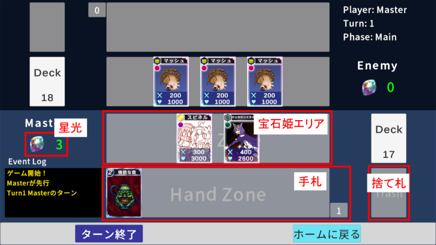
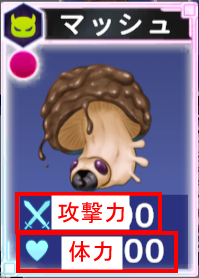
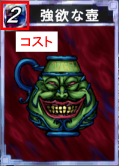
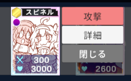
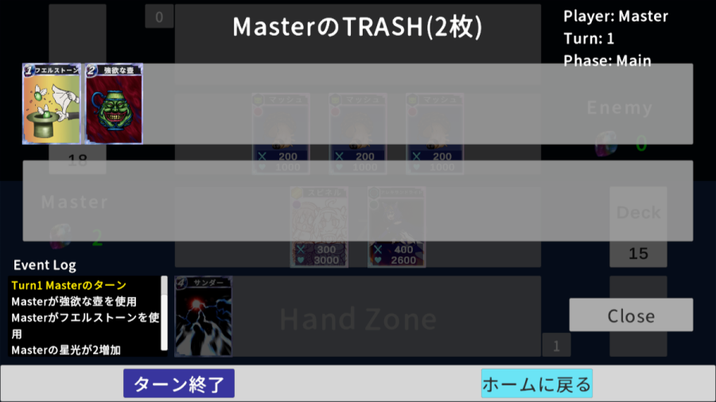
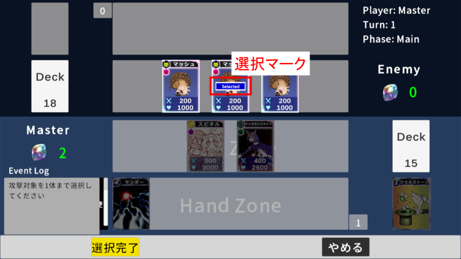
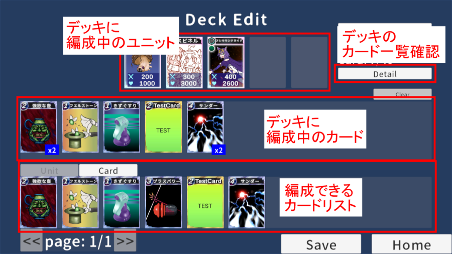

ドローフェイズ
山札から1枚手札に加える
Updated: 2026/05/04
本家宝石姫のアリーナモードを踏襲した対戦型カードゲーム…のWeb版です。
ルールの策定やデザインの決定を補助する目的で開発中。
ご意見、バグ報告等はDiscordからお願いします。
※PC限定、Chromeでのみ動作確認。
ユニット（宝石姫）数：5枚（現状1枚から進行可能）
山札枚数：40枚（現状40枚未満でも進行可能）
同名カード：3枚まで
勝敗条件：相手ユニットを全て戦闘不能にすると勝利。また、ドローフェイズで山札が無いと敗北となる
山札から1枚手札に加える
レスト状態のカードをアクティブにする（自動）
星光を3加える（今後変更の可能性高）
カードの使用、ユニットによる攻撃を行う
手札誘発カードを所持している場合は攻撃に対して使用可能（現状テスト用カードのみ）
手札の枚数が5枚を超えている場合は5枚になるまで捨てる（枚数は暫定）

「Battle」をクリックすると対戦画面に移行します。
「Deck」をクリックするとデッキ編成画面に移行します。



カードをクリックもしくは右クリックでメニューが表示されます。
「詳細」ボタンからカードの情報を表示できます。
攻撃や使用が可能な場合は対応するボタンが表示されるので、クリックで選択してください。カードの使用にはカード左上に表示されているコスト分の星光を消費します。

トラッシュのカードをクリックするとトラッシュ一覧画面に移行します。

攻撃時や対象を取るカード使用時には対象を選択するモードに移行します。選択したら画面下部の「選択完了」ボタンをクリックしてください。「やめる」ボタンでキャンセルできます。

下部の「ターン終了」ボタンでターンを終了します。
その後手札が6枚以上ある場合は捨てるカードを選択するモードに移行します。これはキャンセルできません。
相手の攻撃時に手札誘発が可能なカードを所持している場合は、使用するカードを選択するモードに移行します。「やめる」ボタンでキャンセルできます。

カードリストのタブからユニットとカードを切り替えて、デッキに編成したいカードをクリックするとデッキに追加されます。
デッキからカードを外したい場合は、デッキのカードをクリックする事で1枚ずつ除外できます。
「Save」ボタンをクリックすると現在の状態でセーブされます（今のところ完了時のアナウンスはありませんがローカルに保存されます）